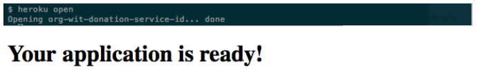

Objectives
Deploy the donation-service app to Heroku. This will require a heroku account + a locally installed git tool set.
Git Bash
This step applies to Windows only.
- The word terminal as used in this lab refers to Git Bash terminal where you are working in Windows and the default terminal in the case of Linux.
If your operating system is a Linux variant then you may run this lab using the default terminal.
Download and install Git for Windows.
- This will be used in this lab. We shall refer to as Git Bash.

All the following commands should be run within the Git Bash terminal, not the standard windows terminal (Command Prompt).
Managing SSH Keys
This step provides guidance on how to manage ssh keys.
Official Heroku documentation on managing SSH keys is available here
Useful information is also availabe on the GitHub site: Generating SSH Keys.
Your computer will communicate with Heroku using Secure Shell (SSH).
Check for the presence of an ssh client application on your computer by running this command in a terminal.
ssh -vThe response should be similar to this:

Check if you already have SSH keys by verifying the presence of an .ssh folder and if it exists, listing its contents:
ls -l ~/.sshNote that ~ is shorthand for your home directory.
If keys are present then the response should be something simiar to that shown in Figure 2:

If keys are not present then generate a key pair (private and public key set) with this command:
ssh-keygen -t rsaAccept the default prompts, providing a passphrase when prompted to secure your private key.
Confirm that keys have been successfully generated by checking the contents of the .ssh folder which should be somewhat similar to that shown in Figure 3 above.
It is important that if other users have access to your computer you make a copy of your ssh keys on a separate medium, such as a USB key. You are advised to delete your private key at the end of your lab. Here are some typical commands:
Change into your .ssh folder:
cd ~/.sshAttach a USB drive and either use file manager to copy the private key or do so from the terminal. Here it is assumed you are using the default key names.
cp id_rsa path_to_your_usb_medium/usb_mediumThe command df may help identify your usb key - see Figure 3.
df
cp ~/ssh.zip /media/ictskills/LINUX-LIVEC/.
You can make a copy of your keys by compressing the .ssh folder and its contents to a file ssh.zip as follows:
// Ensure you are in home directory
cd ~
// Compress the .ssh folder and its contents
zip -r ssh.zip .sshOnce you have made a copy, delete your ssh private key.
rm id_rsaOn the next occasion that you will require the use of the key simply copy the ssh.zip file from your memory key to the Downloads folder, unpack the file and move its contents to the .ssh folder.
unzip ssh.zip
mv ssh/id_rsa ~/.ssh/
mv ssh/id_rsa.pub ~/.ssh/Local Repository
It is assumed you are working with the project donation-service-2015, developed earlier:
- Delete the file Bootstrap.java (if it exists).
- Alternatively, simply comment out its contents and leave the file in place for possible future use as shown in Figure 1.
If the .gitignore file is not present you could create one as follows at the root of the project:
# Ignore all dotfiles...
.*
# except for .gitignore
!.gitignore
bin
documentation
# Ignore Play! working directory #
war
db
eclipse
lib
log
logs
modules
precompiled
project/project
project/target
crud/*
data/*
conf/crud/*
conf/cloudbees*
public/crud/*
target
tmp
test-result
server.pid
*.iml
*.eml- In the same folder, create and a file named ProcFile containing the following:
web: play run --http.port=$PORT $PLAY_OPTSThis next item applies only if the models package contains a class named User:
- Open the 'Users' model file and adjust the the class as follows:
@Entity
@Table(name="`User`") //This is necessary because User is a reserved word in PostGreSQL
public class User extends Model'User' is a reserved table name in the database, so we change it to something slightly different.
This next step applies if a .git repository does not exist in the project folder:
- In a terminal, cd into the folder containing your donation-service-2015 project, and create a git repository for the project:
git initIf a .git folder is already present, remove the origin as follows:
git remote rm originContinue as follows:
Add all files (except those matched by .gitignore) to the repo and commit:
git add .
git commit -m 'commit prior to upload to Heroku'Verify by running the command
git statusThe response should as follow:

Heroku repository
Create an account on Heroku. Note carefully your login and password.
Download and install Heroku Toolbelt for appropriate to your operating system. You may be prompted to close and reopen the terminal following installation of Toolbelt.
- In the case of Linux Mint the required tool belt is that applying to Debian/Ubuntu. It may be installed by an administrator by running this command:
wget -O- https://toolbelt.heroku.com/install-ubuntu.sh | shOnce installed, verify installation ok by typing
heroku --versionThe response should be something like this:
Login in to your heroku account from Git Bash
heroku loginYou will be prompted for you email and password. Successful authentication will be confirmed.
Next create an app and repository on Heroku as follows:
heroku createThe response will be something like this:

Notice the default name assigned by Heroku to the remote app.
Verify with the command
git remote -vand observe a response similar to that in Figure 3.

Now add your SSH keys to Heroku:
heroku keys:add
Finally, push the local repo to Heroku:
git push heroku masterThe response should be somewhat similar to that shown in Figure 5.

Aside: in the event that you wish to push a branch, not the master, to heroku, here is the command to run:
git push -f heroku local-topic-branch:refs/heads/masterWe shall now test the service: In the specific case of this lab we have been randomly assigned a remote Heroku repo named guarded-reef-267.git. The convention for construction a URI to access this repo or service can easily be deduced by studying the URI for this specific service:
http://guarded-reef-2677.herokuapp.com/api/usersThe portions /api/users is determined by how we, the developers, wrote the application (donation-service). Notice where the actual name of the repo is located in the URI:
- guarded-reef-2677Copy this URI into a browser's navigation bar: unfortunately an application error is flagged. The reason for this is that we have not set up a suitable database on Heroku. We shall attend to this shortly.
Changing name of Heroku app
We shall now change the Heroku-assigned name guarded-reef-2677 to a more meaningful name org-wit-donation-service-id where id is your email address excluding @, periods, underscores and so on. For example john_doe@organs.com becomes johndoeorganscom. This is just a suggestion to ensure that the name you choose for the app on Heroku will be unique.
Run the following command within the Heroku terminal, replacing id with your student id, for example.
- You could also try a UUID. The idea is to create a name that will not clash with existing repository names in the Heroku domain.
heroku apps:rename donation-service-yourStudentIDA typical response is shown in Figure 6:

Heroku Database
You created a Heroku app in an earlier step (using the command heroku create)
- A database was made available as part of the app creation process.
- You can verify this by running the following command:
heroku pg:infoA typical response is depicted in Figure 1.

In this case the DATABASE_URL is HEROKU_POSTGRESQL_MAUVE_URL.
Log in to Heroku website for more detailed information such as is shown here in Figure 2 for the current project.
In order to make use of this database do the following:
- Modify the application.conf file:
- Comment out any database activation statements such as, for example, db = mem.
- Add the following block to the end of the file.
#================heroku databse config config=========================
db=${DATABASE_URL}
jpa.dialect=org.hibernate.dialect.PostgreSQLDialect
jpa.ddl=update
#================end database config heroku config====================- In the Heroku terminal add and commit the changes:
git add .
git commit -m 'database configured'
git push heroku masterThe response should be similar to that shown in Figure 3.

Test App
You can test that the application is working correctly in a number of ways, listed here:
- Run the following command: output similar to that in Figure 4 indicates your app has been successfully deployed.
heroku ps
- Next run the command to open a browser: Figure 5 shows the command and additionally the response to the command and the output in the browser if the app is running correctly.
heroku open
- Finally, introduce this URI in a browser's navigation bar: the expected response is shown here in Figure 6:
http://org-wit-donation-service-id.herokuapp.com/api/donorsReset Database
You can reset the database as described below. But if you do, then it will be necessary to push the application again.
- First obtain the DATABASE_URL with the following command:
heroku pg:infoA typical response is depicted in Figure 7.
In this case the DATABASE_URL is HEROKU_POSTGRESQL_MAUVE_URL. The command to run to reset is:
heroku pg:reset HEROKU_POSTGRESQL_MAUVE_URLFollow the instructions as indicated in Figure 8.

References
Exercises
Exercise 1:
Using postman, create a few Users and Donations on the app hosted in heroku. Verify that the creation/deleting proceeds as expected
Exercise 2:
You have some tests in the donation-service-test project, which currently tests the app running on localhost. Change this app such that it will test the application you have now deployed to heroku. A one line change to the Rest class should be sufficient.